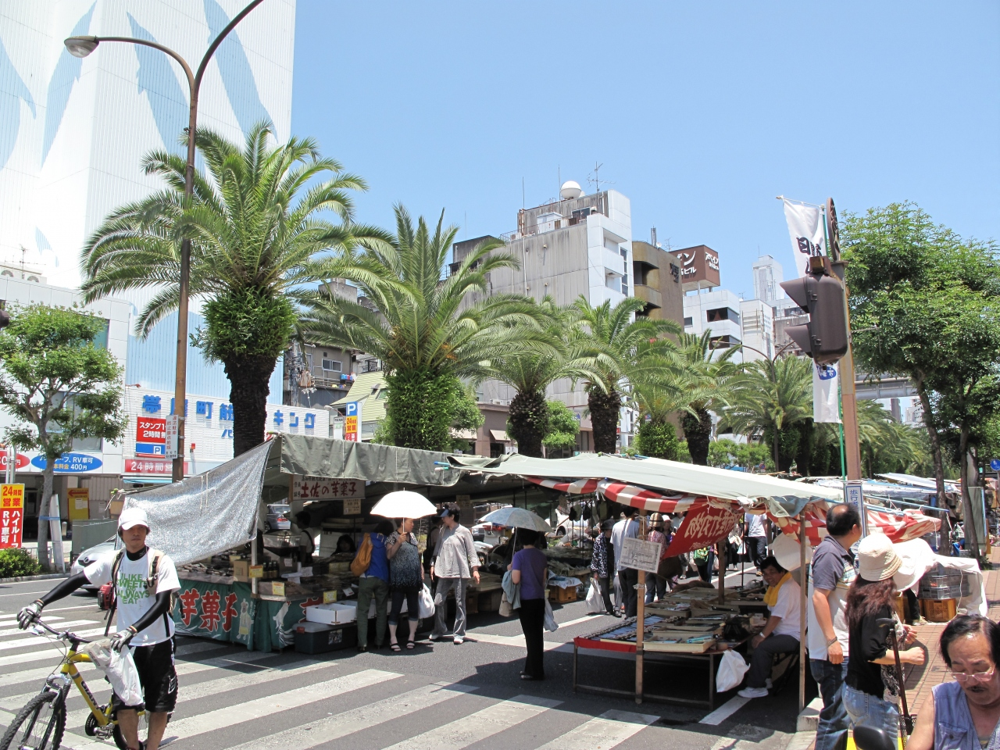
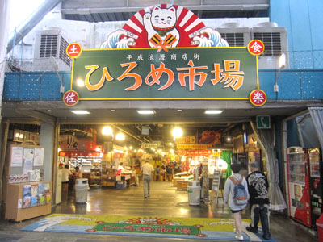
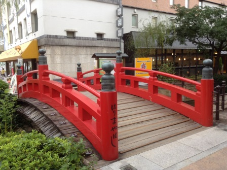

観光スポットやイベントについて
- 高知城
- 高知市のシンボル高知城は、初代藩主山内一豊とその妻千代が礎を築いた土佐二十四万石の歴史ある城です。
- 日本国内に残る木造の12古天守の一つであり、天守閣と追手門が一枚の写真に無理なく収まる数少ないお城の一つでもあります。
- よさこい祭り
- 今や、全国各地で行われている鳴子を持った祭り「よさこい」。
- その「よさこい」の発祥地、高知で開催されるようよさこい祭りは、50年以上の歴史を誇り、毎年8月9日から12日まで行われています。
- 日曜市・街路市
- 毎週日曜日、高知城から東へ約1㎞にわたって約300点の露店が並びます。
- とれたて野菜や果物に、にぎやかな土佐弁が飛び交い、地元の人々をはじめ多くの観光客で賑わっています。
- また、ほかの曜日でも別の場所で市が開催されています。

- ひろめ市場
- 高知市街地の中心にある「ひろめ市場」。
- 人気の観光スポット「高知城」から徒歩約5分の場所にあるひろめ市場には、郷土料理をはじめとする和洋折衷な飲食店約40店が集まっています。

- はりまや橋
- 「♪土佐の高知のはりまや橋で坊さんかんざし買うを見た」と、よさこい節でも唄われる、朱塗りの欄干が有名な橋。
- 東側には、よさこい節のメロディとともに龍馬や桂浜が現れる大きなからくり時計もあります。

ページトップに戻る